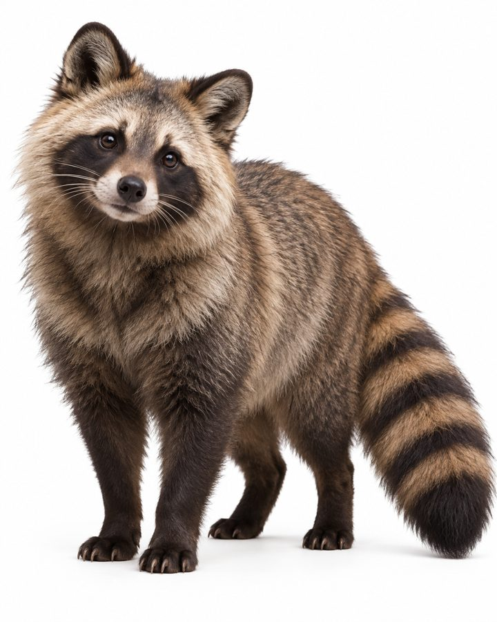

Shenith
A tanuki-like household companion that can smell and cross the boundary between Earth and Ishphaeno on its own.
- Group
- Domestic and companion
- Tags
- both worlds companion
- Form
- Essentially an Earth tanuki, with a sleeker, denser coat suited to Ishphaeno’s wide environmental swings. Canon
- Kept as
- A common household companion on both worlds. Canon
Crossing
- A Shenith can smell the boundary and cross it without help. Canon
- It often comes back carrying small gifts or random objects from the other side. Canon
- That habit makes it a minor good-luck figure in some households. Canon
